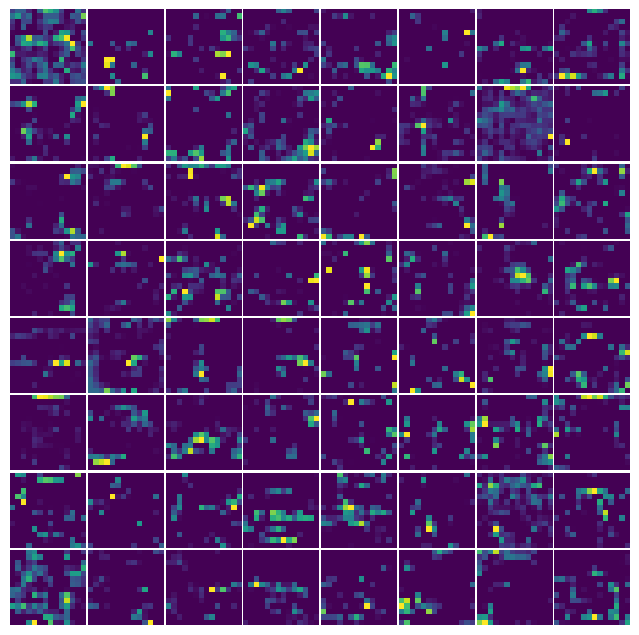

import math
from collections.abc import Callable
from pathlib import Path
from typing import Literal
import numpy as np
import torch
from IPython.display import Markdown
from matplotlib import pyplot as plt
from sklearn.decomposition import PCA
from torch import Tensor, nn
from torchvision import models
from torchvision.io import decode_image
from torchvision.transforms import v2 as TVisualizing Feature Maps from VGG16 and ResNet50 in PyTorch
pytorch
nn
Abstract
In convolutional neural networks (CNNs), intermediate layers capture increasingly abstract representation of the input image. In this post, we visualize feature maps from VGG and ResNet using forward hooks in PyTorch.
Prerequisites
Before we start, we need to install the following libraries: NumPy, Matplotlib, PyTorch, and Torchvision.
In this article, we are going to use pre-trained neural networks. More specifically, weights trained on ImageNet-1K dataset.
But before that, we will prepare input images. We will size the image(s) to 224x224 and normalize it for optimal performance. The preparation step will make the pictures similar to the training dataset. See the link for more details on why this step is necessary.
# ImageNet normalization weights per channel
IMAGENET1K_MEAN = [0.485, 0.456, 0.406]
IMAGENET1K_STD = [0.229, 0.224, 0.225]
transform = T.Compose(
[
T.Resize(256),
T.CenterCrop(224),
T.ToImage(),
T.ToDtype(torch.float32, scale=True),
T.Normalize(IMAGENET1K_MEAN, IMAGENET1K_STD),
]
)
def load_image(path: str | Path) -> Tensor:
img = decode_image(str(path))
# Transform images into tensors
img: Tensor = transform(img)
# Add dimension to imitate batch size equal to 1: (C,H,W) -> (B,C,H,W)
img = img.unsqueeze(0)
return imgdef inverse_normalize(
x_norm: Tensor,
mean: list[float] = IMAGENET1K_MEAN,
std: list[float] = IMAGENET1K_STD,
) -> Tensor:
# Ensure mean and std have the correct shape
_mean = torch.as_tensor(mean).to(x_norm.device).view(1, -1, 1, 1)
_std = torch.as_tensor(std).to(x_norm.device).view(1, -1, 1, 1)
# Inverse normalization: x = x_normalized * std + mean
return x_norm.mul(_std).add(_mean)
reverse_transform = T.Compose(
[
T.Lambda(inverse_normalize),
T.Lambda(lambda x: torch.clamp(x, min=0.0, max=1.0)),
]
)sample = load_image("bridge.jpg")
orig_sample = reverse_transform(sample)
fig, ax = plt.subplots(frameon=False)
fig.subplots_adjust()
ax.imshow(orig_sample.squeeze(0).permute(1, 2, 0))
ax.axis("off")
plt.show()def get_activation(name: str, activations: dict[str, Tensor]) -> Callable:
def hook(model: nn.Module, input: Tensor, output: Tensor) -> None:
# map layer's `name` to layer's output value
activations[name] = output.detach()
return hook
def set_hooks(model: nn.Module, layer_ids: list[str], out: dict[str, Tensor]) -> None:
layer_ids = [str(i) for i in layer_ids]
for name, module in model.named_modules():
if name in layer_ids:
module.register_forward_hook(get_activation(name, out))def visualize_feature_maps(
feature_map: Tensor | np.ndarray,
max_maps: int | None = None,
max_cols: int = 8,
figsize_per_plot: float = 1.0,
norm: Literal["linear", "log", "symlog", "logit", None] = None,
cmap: str = "viridis",
):
if isinstance(feature_map, Tensor):
feature_map = feature_map.cpu().numpy()
if feature_map.ndim == 4:
feature_map = feature_map.squeeze(0) # remove batch dimension if present
assert feature_map.ndim == 3, "Expected tensor shape (C, H, W)"
C, H, W = feature_map.shape
if max_maps:
C = min(C, max_maps)
n_cols = min(C, max_cols)
n_rows = math.ceil(C / n_cols)
figsize = (figsize_per_plot * n_cols, figsize_per_plot * n_rows)
fig, axes = plt.subplots(nrows=n_rows, ncols=n_cols, figsize=figsize, frameon=False, squeeze=False)
fig.subplots_adjust(wspace=0.03, hspace=0.03)
for ax in axes.flat:
ax.axis("off")
for i in range(C):
t = feature_map[i]
axes.flat[i].imshow(t, cmap=cmap, norm=norm, aspect="equal", interpolation="none")
return fig, axesdef minmax_scale_per_channel(arr: np.ndarray) -> np.ndarray:
"""Per-channel MinMax normalization. Expects (C, W, H)."""
assert arr.ndim == 3, f"{arr.ndim=}"
c_min = arr.min(axis=(1, 2), keepdims=True)
c_max = arr.max(axis=(1, 2), keepdims=True)
eps = 1e-5
scaled = (arr - c_min) / (c_max - c_min + eps) # avoid division by zero
return scaled
def pca_rgb(
feature_map: np.ndarray | Tensor,
n_components: Literal[1, 3] = 3,
normalize: bool = True,
random_state: int | None = None,
) -> np.ndarray:
if isinstance(feature_map, torch.Tensor):
feature_map = feature_map.cpu().numpy()
if feature_map.ndim == 4:
feature_map = feature_map.squeeze(0) # remove batch dimension if present
assert feature_map.ndim == 3, "Expected array shape (C, H, W)"
C, H, W = feature_map.shape
pca = PCA(n_components=n_components, random_state=random_state)
flat = feature_map.reshape(C, -1).T
rgb = pca.fit_transform(flat).T.reshape(n_components, H, W)
if normalize:
rgb = minmax_scale_per_channel(rgb)
return rgb
def visualize_feature_maps_pca(
feature_maps: dict[str, Tensor],
n_components: Literal[1, 3] = 3,
max_cols: int = 4,
figsize_per_plot: float = 2.0,
norm: Literal["linear", "log", "symlog", "logit", None] = None,
subtitles: bool = True,
cmap: str = "viridis",
):
c = len(feature_maps)
n_cols = min(c, max_cols)
n_rows = math.ceil(c / n_cols)
fig_size = (figsize_per_plot * n_cols, figsize_per_plot * n_rows)
fig, axes = plt.subplots(n_rows, n_cols, figsize=fig_size, squeeze=False, frameon=False)
fig.subplots_adjust(wspace=0.03, hspace=0.20, top=0.85)
# if title:
# fig.suptitle(title, color="0.5")
for ax in axes.flat:
ax.axis("off")
for ax, (layer, feature_map) in zip(axes.flat, feature_maps.items(), strict=False):
rgb_features = pca_rgb(feature_map, n_components=n_components)
rgb_features = rgb_features.transpose(1, 2, 0)
rgb_features = rgb_features.squeeze()
ax.imshow(rgb_features, cmap=cmap, norm=norm, aspect="equal", interpolation="none")
if subtitles:
ax.set_title(layer, color="0.5")
return fig, axesVGG
The VGG are deep neural networks introduced by (Simonyan and Zisserman 2014) in 2014. The VGG stacks many small 3x3 convolution filters in sequence. This simple “deeper‑is‑better” design once achieved top ImageNet performance while showing that depth and uniform layer structure can yield strong feature hierarchies, making VGG a popular baseline for vision tasks and transfer learning. Nowadays, they are considered outdated.
model = models.vgg11(weights=models.VGG11_Weights.IMAGENET1K_V1).features
# Let's inspect the VGG's feature extractor layers
modelSequential(
(0): Conv2d(3, 64, kernel_size=(3, 3), stride=(1, 1), padding=(1, 1))
(1): ReLU(inplace=True)
(2): MaxPool2d(kernel_size=2, stride=2, padding=0, dilation=1, ceil_mode=False)
(3): Conv2d(64, 128, kernel_size=(3, 3), stride=(1, 1), padding=(1, 1))
(4): ReLU(inplace=True)
(5): MaxPool2d(kernel_size=2, stride=2, padding=0, dilation=1, ceil_mode=False)
(6): Conv2d(128, 256, kernel_size=(3, 3), stride=(1, 1), padding=(1, 1))
(7): ReLU(inplace=True)
(8): Conv2d(256, 256, kernel_size=(3, 3), stride=(1, 1), padding=(1, 1))
(9): ReLU(inplace=True)
(10): MaxPool2d(kernel_size=2, stride=2, padding=0, dilation=1, ceil_mode=False)
(11): Conv2d(256, 512, kernel_size=(3, 3), stride=(1, 1), padding=(1, 1))
(12): ReLU(inplace=True)
(13): Conv2d(512, 512, kernel_size=(3, 3), stride=(1, 1), padding=(1, 1))
(14): ReLU(inplace=True)
(15): MaxPool2d(kernel_size=2, stride=2, padding=0, dilation=1, ceil_mode=False)
(16): Conv2d(512, 512, kernel_size=(3, 3), stride=(1, 1), padding=(1, 1))
(17): ReLU(inplace=True)
(18): Conv2d(512, 512, kernel_size=(3, 3), stride=(1, 1), padding=(1, 1))
(19): ReLU(inplace=True)
(20): MaxPool2d(kernel_size=2, stride=2, padding=0, dilation=1, ceil_mode=False)
)# cherry-pick layers of which outputs we want to see
selected_layers = ["0", "3", "6", "8", "11", "13", "16", "18"]
# add forward hooks to the model
vgg_activations = {}
set_hooks(model, selected_layers, vgg_activations)
# make forward pass through NN
with torch.no_grad():
model(sample)Below we visualize the feature maps generated by a few hand‑picked layers. A feature map (also called an activation map) is simply the tensor that a layer outputs (for example, output = conv(input)). During training, each convolutional layer learns a set of spatial kernels that act as filters (see kernels in image processing), allowing the network to draw ever‑richer patterns from the feature maps produced by the preceding layers.
for layer, filters in vgg_activations.items():
display(Markdown(f"### Layer #{layer}"))
visualize_feature_maps(filters, max_maps=8 * 8, norm="linear")
plt.show()Layer #0
Layer #3
Layer #6
Layer #8
Layer #11
Layer #13
Layer #16
Layer #18
Above, we noted that the number of visualizations grows with the number of filters. A large number of filters can be overwhelming when a layer produces dozens of maps. To condense this information, we can project the feature maps with principal‑component analysis (PCA). We treat each spatial position across all maps as a feature vector, run PCA, and then reconstruct the dominant components. The result is a single “average” activation image that captures the most salient variance across the entire stack of feature maps. It can be rendered in either 1‑channel (grayscale) or 3‑channel (RGB) form.
visualize_feature_maps_pca(vgg_activations, max_cols=4)
plt.show()ResNet
ResNets (Residual Networks), introduced by (Targ, Almeida, and Lyman 2016), add “skip” or residual connections that let inputs bypass one or more layers. These identity shortcuts make very deep CNNs (e.g., ResNet‑50/101/152) easier to train by mitigating vanishing gradients, enabling state‑of‑the‑art accuracy with hundreds of layers. [wiki]
model = models.resnet50(weights=models.ResNet50_Weights.IMAGENET1K_V1)
# inspect layers within ResNet
modelResNet(
(conv1): Conv2d(3, 64, kernel_size=(7, 7), stride=(2, 2), padding=(3, 3), bias=False)
(bn1): BatchNorm2d(64, eps=1e-05, momentum=0.1, affine=True, track_running_stats=True)
(relu): ReLU(inplace=True)
(maxpool): MaxPool2d(kernel_size=3, stride=2, padding=1, dilation=1, ceil_mode=False)
(layer1): Sequential(
(0): Bottleneck(
(conv1): Conv2d(64, 64, kernel_size=(1, 1), stride=(1, 1), bias=False)
(bn1): BatchNorm2d(64, eps=1e-05, momentum=0.1, affine=True, track_running_stats=True)
(conv2): Conv2d(64, 64, kernel_size=(3, 3), stride=(1, 1), padding=(1, 1), bias=False)
(bn2): BatchNorm2d(64, eps=1e-05, momentum=0.1, affine=True, track_running_stats=True)
(conv3): Conv2d(64, 256, kernel_size=(1, 1), stride=(1, 1), bias=False)
(bn3): BatchNorm2d(256, eps=1e-05, momentum=0.1, affine=True, track_running_stats=True)
(relu): ReLU(inplace=True)
(downsample): Sequential(
(0): Conv2d(64, 256, kernel_size=(1, 1), stride=(1, 1), bias=False)
(1): BatchNorm2d(256, eps=1e-05, momentum=0.1, affine=True, track_running_stats=True)
)
)
(1): Bottleneck(
(conv1): Conv2d(256, 64, kernel_size=(1, 1), stride=(1, 1), bias=False)
(bn1): BatchNorm2d(64, eps=1e-05, momentum=0.1, affine=True, track_running_stats=True)
(conv2): Conv2d(64, 64, kernel_size=(3, 3), stride=(1, 1), padding=(1, 1), bias=False)
(bn2): BatchNorm2d(64, eps=1e-05, momentum=0.1, affine=True, track_running_stats=True)
(conv3): Conv2d(64, 256, kernel_size=(1, 1), stride=(1, 1), bias=False)
(bn3): BatchNorm2d(256, eps=1e-05, momentum=0.1, affine=True, track_running_stats=True)
(relu): ReLU(inplace=True)
)
(2): Bottleneck(
(conv1): Conv2d(256, 64, kernel_size=(1, 1), stride=(1, 1), bias=False)
(bn1): BatchNorm2d(64, eps=1e-05, momentum=0.1, affine=True, track_running_stats=True)
(conv2): Conv2d(64, 64, kernel_size=(3, 3), stride=(1, 1), padding=(1, 1), bias=False)
(bn2): BatchNorm2d(64, eps=1e-05, momentum=0.1, affine=True, track_running_stats=True)
(conv3): Conv2d(64, 256, kernel_size=(1, 1), stride=(1, 1), bias=False)
(bn3): BatchNorm2d(256, eps=1e-05, momentum=0.1, affine=True, track_running_stats=True)
(relu): ReLU(inplace=True)
)
)
(layer2): Sequential(
(0): Bottleneck(
(conv1): Conv2d(256, 128, kernel_size=(1, 1), stride=(1, 1), bias=False)
(bn1): BatchNorm2d(128, eps=1e-05, momentum=0.1, affine=True, track_running_stats=True)
(conv2): Conv2d(128, 128, kernel_size=(3, 3), stride=(2, 2), padding=(1, 1), bias=False)
(bn2): BatchNorm2d(128, eps=1e-05, momentum=0.1, affine=True, track_running_stats=True)
(conv3): Conv2d(128, 512, kernel_size=(1, 1), stride=(1, 1), bias=False)
(bn3): BatchNorm2d(512, eps=1e-05, momentum=0.1, affine=True, track_running_stats=True)
(relu): ReLU(inplace=True)
(downsample): Sequential(
(0): Conv2d(256, 512, kernel_size=(1, 1), stride=(2, 2), bias=False)
(1): BatchNorm2d(512, eps=1e-05, momentum=0.1, affine=True, track_running_stats=True)
)
)
(1): Bottleneck(
(conv1): Conv2d(512, 128, kernel_size=(1, 1), stride=(1, 1), bias=False)
(bn1): BatchNorm2d(128, eps=1e-05, momentum=0.1, affine=True, track_running_stats=True)
(conv2): Conv2d(128, 128, kernel_size=(3, 3), stride=(1, 1), padding=(1, 1), bias=False)
(bn2): BatchNorm2d(128, eps=1e-05, momentum=0.1, affine=True, track_running_stats=True)
(conv3): Conv2d(128, 512, kernel_size=(1, 1), stride=(1, 1), bias=False)
(bn3): BatchNorm2d(512, eps=1e-05, momentum=0.1, affine=True, track_running_stats=True)
(relu): ReLU(inplace=True)
)
(2): Bottleneck(
(conv1): Conv2d(512, 128, kernel_size=(1, 1), stride=(1, 1), bias=False)
(bn1): BatchNorm2d(128, eps=1e-05, momentum=0.1, affine=True, track_running_stats=True)
(conv2): Conv2d(128, 128, kernel_size=(3, 3), stride=(1, 1), padding=(1, 1), bias=False)
(bn2): BatchNorm2d(128, eps=1e-05, momentum=0.1, affine=True, track_running_stats=True)
(conv3): Conv2d(128, 512, kernel_size=(1, 1), stride=(1, 1), bias=False)
(bn3): BatchNorm2d(512, eps=1e-05, momentum=0.1, affine=True, track_running_stats=True)
(relu): ReLU(inplace=True)
)
(3): Bottleneck(
(conv1): Conv2d(512, 128, kernel_size=(1, 1), stride=(1, 1), bias=False)
(bn1): BatchNorm2d(128, eps=1e-05, momentum=0.1, affine=True, track_running_stats=True)
(conv2): Conv2d(128, 128, kernel_size=(3, 3), stride=(1, 1), padding=(1, 1), bias=False)
(bn2): BatchNorm2d(128, eps=1e-05, momentum=0.1, affine=True, track_running_stats=True)
(conv3): Conv2d(128, 512, kernel_size=(1, 1), stride=(1, 1), bias=False)
(bn3): BatchNorm2d(512, eps=1e-05, momentum=0.1, affine=True, track_running_stats=True)
(relu): ReLU(inplace=True)
)
)
(layer3): Sequential(
(0): Bottleneck(
(conv1): Conv2d(512, 256, kernel_size=(1, 1), stride=(1, 1), bias=False)
(bn1): BatchNorm2d(256, eps=1e-05, momentum=0.1, affine=True, track_running_stats=True)
(conv2): Conv2d(256, 256, kernel_size=(3, 3), stride=(2, 2), padding=(1, 1), bias=False)
(bn2): BatchNorm2d(256, eps=1e-05, momentum=0.1, affine=True, track_running_stats=True)
(conv3): Conv2d(256, 1024, kernel_size=(1, 1), stride=(1, 1), bias=False)
(bn3): BatchNorm2d(1024, eps=1e-05, momentum=0.1, affine=True, track_running_stats=True)
(relu): ReLU(inplace=True)
(downsample): Sequential(
(0): Conv2d(512, 1024, kernel_size=(1, 1), stride=(2, 2), bias=False)
(1): BatchNorm2d(1024, eps=1e-05, momentum=0.1, affine=True, track_running_stats=True)
)
)
(1): Bottleneck(
(conv1): Conv2d(1024, 256, kernel_size=(1, 1), stride=(1, 1), bias=False)
(bn1): BatchNorm2d(256, eps=1e-05, momentum=0.1, affine=True, track_running_stats=True)
(conv2): Conv2d(256, 256, kernel_size=(3, 3), stride=(1, 1), padding=(1, 1), bias=False)
(bn2): BatchNorm2d(256, eps=1e-05, momentum=0.1, affine=True, track_running_stats=True)
(conv3): Conv2d(256, 1024, kernel_size=(1, 1), stride=(1, 1), bias=False)
(bn3): BatchNorm2d(1024, eps=1e-05, momentum=0.1, affine=True, track_running_stats=True)
(relu): ReLU(inplace=True)
)
(2): Bottleneck(
(conv1): Conv2d(1024, 256, kernel_size=(1, 1), stride=(1, 1), bias=False)
(bn1): BatchNorm2d(256, eps=1e-05, momentum=0.1, affine=True, track_running_stats=True)
(conv2): Conv2d(256, 256, kernel_size=(3, 3), stride=(1, 1), padding=(1, 1), bias=False)
(bn2): BatchNorm2d(256, eps=1e-05, momentum=0.1, affine=True, track_running_stats=True)
(conv3): Conv2d(256, 1024, kernel_size=(1, 1), stride=(1, 1), bias=False)
(bn3): BatchNorm2d(1024, eps=1e-05, momentum=0.1, affine=True, track_running_stats=True)
(relu): ReLU(inplace=True)
)
(3): Bottleneck(
(conv1): Conv2d(1024, 256, kernel_size=(1, 1), stride=(1, 1), bias=False)
(bn1): BatchNorm2d(256, eps=1e-05, momentum=0.1, affine=True, track_running_stats=True)
(conv2): Conv2d(256, 256, kernel_size=(3, 3), stride=(1, 1), padding=(1, 1), bias=False)
(bn2): BatchNorm2d(256, eps=1e-05, momentum=0.1, affine=True, track_running_stats=True)
(conv3): Conv2d(256, 1024, kernel_size=(1, 1), stride=(1, 1), bias=False)
(bn3): BatchNorm2d(1024, eps=1e-05, momentum=0.1, affine=True, track_running_stats=True)
(relu): ReLU(inplace=True)
)
(4): Bottleneck(
(conv1): Conv2d(1024, 256, kernel_size=(1, 1), stride=(1, 1), bias=False)
(bn1): BatchNorm2d(256, eps=1e-05, momentum=0.1, affine=True, track_running_stats=True)
(conv2): Conv2d(256, 256, kernel_size=(3, 3), stride=(1, 1), padding=(1, 1), bias=False)
(bn2): BatchNorm2d(256, eps=1e-05, momentum=0.1, affine=True, track_running_stats=True)
(conv3): Conv2d(256, 1024, kernel_size=(1, 1), stride=(1, 1), bias=False)
(bn3): BatchNorm2d(1024, eps=1e-05, momentum=0.1, affine=True, track_running_stats=True)
(relu): ReLU(inplace=True)
)
(5): Bottleneck(
(conv1): Conv2d(1024, 256, kernel_size=(1, 1), stride=(1, 1), bias=False)
(bn1): BatchNorm2d(256, eps=1e-05, momentum=0.1, affine=True, track_running_stats=True)
(conv2): Conv2d(256, 256, kernel_size=(3, 3), stride=(1, 1), padding=(1, 1), bias=False)
(bn2): BatchNorm2d(256, eps=1e-05, momentum=0.1, affine=True, track_running_stats=True)
(conv3): Conv2d(256, 1024, kernel_size=(1, 1), stride=(1, 1), bias=False)
(bn3): BatchNorm2d(1024, eps=1e-05, momentum=0.1, affine=True, track_running_stats=True)
(relu): ReLU(inplace=True)
)
)
(layer4): Sequential(
(0): Bottleneck(
(conv1): Conv2d(1024, 512, kernel_size=(1, 1), stride=(1, 1), bias=False)
(bn1): BatchNorm2d(512, eps=1e-05, momentum=0.1, affine=True, track_running_stats=True)
(conv2): Conv2d(512, 512, kernel_size=(3, 3), stride=(2, 2), padding=(1, 1), bias=False)
(bn2): BatchNorm2d(512, eps=1e-05, momentum=0.1, affine=True, track_running_stats=True)
(conv3): Conv2d(512, 2048, kernel_size=(1, 1), stride=(1, 1), bias=False)
(bn3): BatchNorm2d(2048, eps=1e-05, momentum=0.1, affine=True, track_running_stats=True)
(relu): ReLU(inplace=True)
(downsample): Sequential(
(0): Conv2d(1024, 2048, kernel_size=(1, 1), stride=(2, 2), bias=False)
(1): BatchNorm2d(2048, eps=1e-05, momentum=0.1, affine=True, track_running_stats=True)
)
)
(1): Bottleneck(
(conv1): Conv2d(2048, 512, kernel_size=(1, 1), stride=(1, 1), bias=False)
(bn1): BatchNorm2d(512, eps=1e-05, momentum=0.1, affine=True, track_running_stats=True)
(conv2): Conv2d(512, 512, kernel_size=(3, 3), stride=(1, 1), padding=(1, 1), bias=False)
(bn2): BatchNorm2d(512, eps=1e-05, momentum=0.1, affine=True, track_running_stats=True)
(conv3): Conv2d(512, 2048, kernel_size=(1, 1), stride=(1, 1), bias=False)
(bn3): BatchNorm2d(2048, eps=1e-05, momentum=0.1, affine=True, track_running_stats=True)
(relu): ReLU(inplace=True)
)
(2): Bottleneck(
(conv1): Conv2d(2048, 512, kernel_size=(1, 1), stride=(1, 1), bias=False)
(bn1): BatchNorm2d(512, eps=1e-05, momentum=0.1, affine=True, track_running_stats=True)
(conv2): Conv2d(512, 512, kernel_size=(3, 3), stride=(1, 1), padding=(1, 1), bias=False)
(bn2): BatchNorm2d(512, eps=1e-05, momentum=0.1, affine=True, track_running_stats=True)
(conv3): Conv2d(512, 2048, kernel_size=(1, 1), stride=(1, 1), bias=False)
(bn3): BatchNorm2d(2048, eps=1e-05, momentum=0.1, affine=True, track_running_stats=True)
(relu): ReLU(inplace=True)
)
)
(avgpool): AdaptiveAvgPool2d(output_size=(1, 1))
(fc): Linear(in_features=2048, out_features=1000, bias=True)
)selected_layers = ["conv1", "layer1", "layer2", "layer3", "layer4"]
resnet_feature_maps: dict[str, Tensor] = {}
set_hooks(model, selected_layers, resnet_feature_maps)
with torch.no_grad():
model(sample)for layer, filters in resnet_feature_maps.items():
display(Markdown(f'### Layer "{layer}"'))
visualize_feature_maps(filters, max_maps=8 * 8, norm="linear")
plt.show()Layer “conv1”
Layer “layer1”
Layer “layer2”
Layer “layer3”

Layer “layer4”
visualize_feature_maps_pca(resnet_feature_maps, max_cols=3)
plt.show()Conclusions
This article introduced a lightweight technique for visualizing pre-selected neural network layers’ feature maps (layer‑wise outputs). These visualizations offer an intuitive window into what a convolutional network attends to at each processing stage.
For deeper, production‑grade interpretability, explore the rich ecosystem of explainability libraries and frameworks, such as Captum or SHAP, and take a broader look at the rapidly growing fields of eXplainable AI (XAI) and Responsible AI.
References
Simonyan, Karen, and Andrew Zisserman. 2014. “Very Deep Convolutional Networks for Large-Scale Image Recognition.” arXiv Preprint arXiv:1409.1556.
Targ, Sasha, Diogo Almeida, and Kevin Lyman. 2016. “Resnet in Resnet: Generalizing Residual Architectures.” arXiv Preprint arXiv:1603.08029.